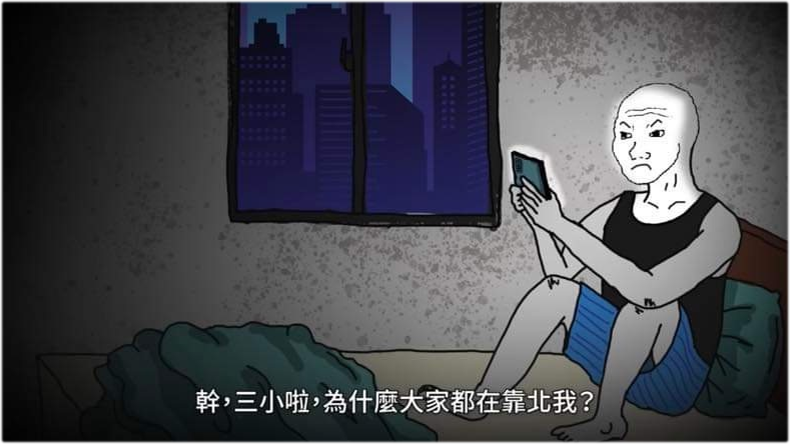

Illustration
Gender
♀️ - 女生
🕵️♂️ - 你不知道我是誰（初始蓋伏）
Goal
對教授說妳非瑞昱不做
Ability
# 慎選實驗室，專案不分系 -
傳遞到你面前的論文被抄襲，翻開角色然後上網發文，網友會同情你兩張手牌。
# 給多少 $ 出多少力 -
發動動作牌沒有直接生效，因為 $ 給不夠，所以抽一張牌。
## 想不開了 -
妳即將肄業，想不開了，但是妳不會，更換研究題目為電子紙或眼動儀，撤銷所有非新研究相關的論文，蓋伏角色退出專案。
Trivia
或許你早已忘了自己對指導教授說過的第一句話是什麼，但是小瓜是這麼說的：「老師，我找你只想做瑞昱的產學合作計畫，其他的事我不想做」
剛好她遇到的是一位「最善解人意、因材施教」的指導教授。老師沒多說什麼，點點頭就答應讓她試試。
然而，時間一久，當初那位「積極」要參與計畫的小瓜，似乎常常事情沒做完、人也找不到！？
據計畫 leader 所說：「常常約好要錄資料，時間到了人還沒到。不然就是資料才錄一點點，人就消失不見了！？」
後來才知道，她還曾和老師說過這段話：「老師，計畫發的薪水會影響我的參與度。錢發太少的話，我沒辦法投入太多時間」
這波「給多少 $ 出多少力」的操作，連脾氣再怎麼好的老師都扛不住了，只能私下找資深的學長吐苦水。
礙於 $ 太少，小瓜能出的力實在有限，這個計畫也必須越來越多人下海救火，原本以為可以相安無事的順利做到結案…
「慎選實驗室」🤣x 3 ❤️ x 1
「…當初滿懷期待，現在只剩失望！」
「專案不分系…，學長…，老師不管！」
一篇匿名爆料文迅速引燃網路。
奇怪的是，這時不知從哪裡湧入一群義勇軍…
「接不到計畫不就是教授看你不夠格才不給你接嗎」❤️ x 5
「是不是不小心被我搶走啦～ 嘻嘻」❤️ x 4
「想不通怎麼有人要拿這個文憑還要砸自己招牌…」❤️ x 4
「這經歷跟我軍中認識的一位連長不能說很像，只能說一模一樣」
眼見火勢漸漸要往自已身上燒了，小瓜心想：

於是她火速刪文。
沒想到隔天 AIoT Lab 傳來捷報，「今天有人打電話去學務處說想不開了…」
AIoT Lab 頓時狼人殺開打，人人自危、互相猜忌，都在找誰才是搞事的狼人？
「…是不是你，不要在網路上罵人」
「要罵就私底下罵啊，搞得整間 Lab 烏煙瘴氣的」
殊不知，真正的狼人，根本藏在隔壁實驗室…
最終，小瓜還是想開了，選擇主動退出專案。
社會的運作就是這麼奇妙 —
有些群體總是特別受到保護，你或許只是說了句普世皆知的「公道話」，卻被當成在「迫害」他們…
「你要體諒人家啊，他們很辛苦耶！」
真是有趣的世界啊！
#AIoT #Master #Year112